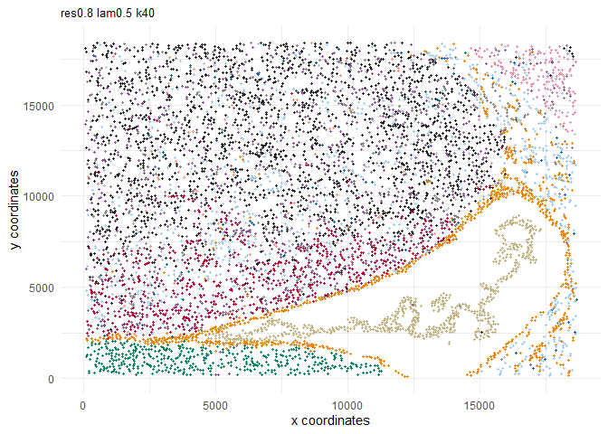
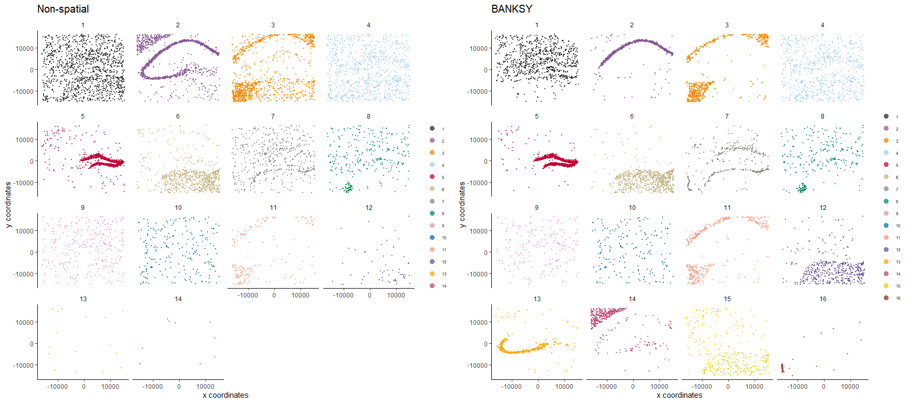

Overview
BANKSY is a method for clustering spatial omics data by augmenting the features of each cell with both an average of the features of its spatial neighbors along with neighborhood feature gradients. By incorporating neighborhood information for clustering, BANKSY is able to
- improve cell-type assignment in noisy data
- distinguish subtly different cell-types stratified by microenvironment
- identify spatial domains sharing the same microenvironment
BANKSY is applicable to a wide array of spatial technologies (e.g. 10x Visium, Slide-seq, MERFISH, CosMX, CODEX) and scales well to large datasets. For more details, check out:
- the preprint,
- a tweetorial on BANKSY,
- and a Python version of this package.
Installation
The Banksy package can be installed via remotes:
remotes::install_github("prabhakarlab/Banksy")Banksy is also interoperable with Seurat via SeuratWrappers. Documentation on how to run BANKSY on Seurat objects can be found here. For installation of SeuratWrappers with BANKSY version >= 0.1.4, run
remotes::install_github('jleechung/seurat-wrappers@feat-aft')Quick start
Load BANKSY. We’ll also load SpatialExperiment and SummarizedExperiment for containing and manipulating the data, scuttle for normalization and quality control, and scater, ggplot2 and cowplot for visualisation.
library(Banksy)
library(SummarizedExperiment)
library(SpatialExperiment)
library(scuttle)
library(scater)
library(cowplot)
library(ggplot2)Here, we’ll run BANKSY on mouse hippocampus data.
Initialize a SpatialExperiment object and perform basic quality control and normalization.
se <- SpatialExperiment(assay = list(counts = gcm), spatialCoords = locs)
# QC based on total counts
qcstats <- perCellQCMetrics(se)
thres <- quantile(qcstats$total, c(0.05, 0.98))
keep <- (qcstats$total > thres[1]) & (qcstats$total < thres[2])
se <- se[, keep]
# Normalization to mean library size
se <- computeLibraryFactors(se)
aname <- "normcounts"
assay(se, aname) <- normalizeCounts(se, log = FALSE)Compute the neighborhood matrices for BANKSY. Setting compute_agf=TRUE computes both the weighted neighborhood mean (ℳ) and the azimuthal Gabor filter (𝒢). The number of spatial neighbors used to compute ℳ and 𝒢 are k_geom[1]=15 and k_geom[2]=30 respectively. We run BANKSY at lambda=0 corresponding to non-spatial clustering, and lambda=0.2 corresponding to BANKSY for cell-typing.
lambda <- c(0, 0.2)
k_geom <- c(15, 30)
se <- Banksy::computeBanksy(se, assay_name = aname, compute_agf = TRUE, k_geom = k_geom)
#> Computing neighbors...
#> Spatial mode is kNN_median
#> Parameters: k_geom=15
#> Done
#> Computing neighbors...
#> Spatial mode is kNN_median
#> Parameters: k_geom=30
#> Done
#> Computing harmonic m = 0
#> Using 15 neighbors
#> Done
#> Computing harmonic m = 1
#> Using 30 neighbors
#> Centering
#> DoneNext, run PCA on the BANKSY matrix and perform clustering. Setting use_agf=TRUE uses both ℳ and 𝒢 to construct the BANKSY matrix.
set.seed(1000)
se <- Banksy::runBanksyPCA(se, use_agf = TRUE, lambda = lambda)
se <- Banksy::runBanksyUMAP(se, use_agf = TRUE, lambda = lambda)
se <- Banksy::clusterBanksy(se, use_agf = TRUE, lambda = lambda, resolution = 1.2)Different clustering runs can be relabeled to minimise their differences with connectClusters:
se <- Banksy::connectClusters(se)
#> clust_M1_lam0.2_k50_res1.2 --> clust_M1_lam0_k50_res1.2Visualise the clustering output for non-spatial clustering (lambda=0) and BANKSY clustering (lambda=0.2).
cnames <- colnames(colData(se))
cnames <- cnames[grep("^clust", cnames)]
colData(se) <- cbind(colData(se), spatialCoords(se))
plot_nsp <- plotColData(se,
x = "sdimx", y = "sdimy",
point_size = 0.6, colour_by = cnames[1]
)
plot_bank <- plotColData(se,
x = "sdimx", y = "sdimy",
point_size = 0.6, colour_by = cnames[2]
)
plot_grid(plot_nsp + coord_equal(), plot_bank + coord_equal(), ncol = 2)
For clarity, we can visualise each of the clusters separately:
plot_grid(
plot_nsp + facet_wrap(~colour_by),
plot_bank + facet_wrap(~colour_by),
ncol = 2
)
Visualize UMAPs of the non-spatial and BANKSY embedding:
rdnames <- reducedDimNames(se)
umap_nsp <- plotReducedDim(se,
dimred = grep("UMAP.*lam0$", rdnames, value = TRUE),
colour_by = cnames[1]
)
umap_bank <- plotReducedDim(se,
dimred = grep("UMAP.*lam0.2$", rdnames, value = TRUE),
colour_by = cnames[2]
)
plot_grid(
umap_nsp,
umap_bank,
ncol = 2
)
Session information
sessionInfo()
#> R version 4.3.2 (2023-10-31)
#> Platform: aarch64-apple-darwin20 (64-bit)
#> Running under: macOS Ventura 13.3
#>
#> Matrix products: default
#> BLAS: /Library/Frameworks/R.framework/Versions/4.3-arm64/Resources/lib/libRblas.0.dylib
#> LAPACK: /Library/Frameworks/R.framework/Versions/4.3-arm64/Resources/lib/libRlapack.dylib; LAPACK version 3.11.0
#>
#> locale:
#> [1] en_US.UTF-8/en_US.UTF-8/en_US.UTF-8/C/en_US.UTF-8/en_US.UTF-8
#>
#> time zone: Europe/London
#> tzcode source: internal
#>
#> attached base packages:
#> [1] stats4 stats graphics grDevices utils datasets methods
#> [8] base
#>
#> other attached packages:
#> [1] cowplot_1.1.1 scater_1.30.0
#> [3] ggplot2_3.4.4 scuttle_1.12.0
#> [5] SpatialExperiment_1.12.0 SingleCellExperiment_1.24.0
#> [7] SummarizedExperiment_1.32.0 Biobase_2.62.0
#> [9] GenomicRanges_1.54.1 GenomeInfoDb_1.38.1
#> [11] IRanges_2.36.0 S4Vectors_0.40.1
#> [13] BiocGenerics_0.48.1 MatrixGenerics_1.14.0
#> [15] matrixStats_1.1.0 Banksy_0.99.0
#>
#> loaded via a namespace (and not attached):
#> [1] tidyselect_1.2.0 viridisLite_0.4.2
#> [3] farver_2.1.1 dplyr_1.1.3
#> [5] vipor_0.4.5 viridis_0.6.4
#> [7] bitops_1.0-7 fastmap_1.1.1
#> [9] RCurl_1.98-1.13 digest_0.6.33
#> [11] rsvd_1.0.5 lifecycle_1.0.4
#> [13] magrittr_2.0.3 dbscan_1.1-11
#> [15] compiler_4.3.2 rlang_1.1.2
#> [17] tools_4.3.2 igraph_1.5.1
#> [19] utf8_1.2.4 yaml_2.3.7
#> [21] data.table_1.14.8 knitr_1.45
#> [23] labeling_0.4.3 S4Arrays_1.2.0
#> [25] DelayedArray_0.28.0 abind_1.4-5
#> [27] BiocParallel_1.36.0 withr_2.5.2
#> [29] grid_4.3.2 fansi_1.0.5
#> [31] beachmat_2.18.0 colorspace_2.1-0
#> [33] aricode_1.0.3 scales_1.2.1
#> [35] cli_3.6.1 rmarkdown_2.25
#> [37] crayon_1.5.2 leidenAlg_1.1.2
#> [39] generics_0.1.3 rstudioapi_0.15.0
#> [41] rjson_0.2.21 DelayedMatrixStats_1.24.0
#> [43] ggbeeswarm_0.7.2 RcppHungarian_0.3
#> [45] zlibbioc_1.48.0 parallel_4.3.2
#> [47] XVector_0.42.0 vctrs_0.6.4
#> [49] Matrix_1.6-1.1 BiocSingular_1.18.0
#> [51] BiocNeighbors_1.20.0 ggrepel_0.9.4
#> [53] irlba_2.3.5.1 beeswarm_0.4.0
#> [55] magick_2.8.1 glue_1.6.2
#> [57] codetools_0.2-19 uwot_0.1.16
#> [59] RcppAnnoy_0.0.21 gtable_0.3.4
#> [61] ScaledMatrix_1.10.0 munsell_0.5.0
#> [63] tibble_3.2.1 pillar_1.9.0
#> [65] htmltools_0.5.7 GenomeInfoDbData_1.2.11
#> [67] R6_2.5.1 sparseMatrixStats_1.14.0
#> [69] evaluate_0.23 sccore_1.0.4
#> [71] lattice_0.22-5 highr_0.10
#> [73] Rcpp_1.0.11 gridExtra_2.3
#> [75] SparseArray_1.2.2 xfun_0.41
#> [77] pkgconfig_2.0.3